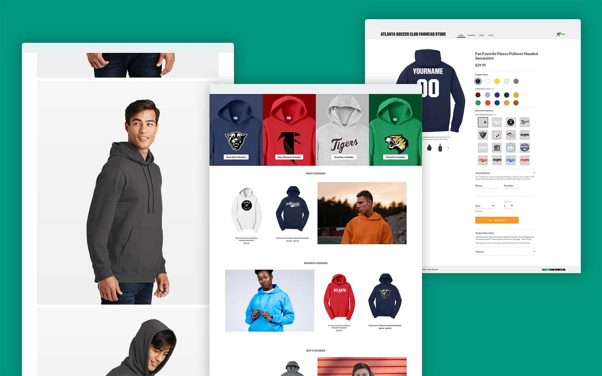
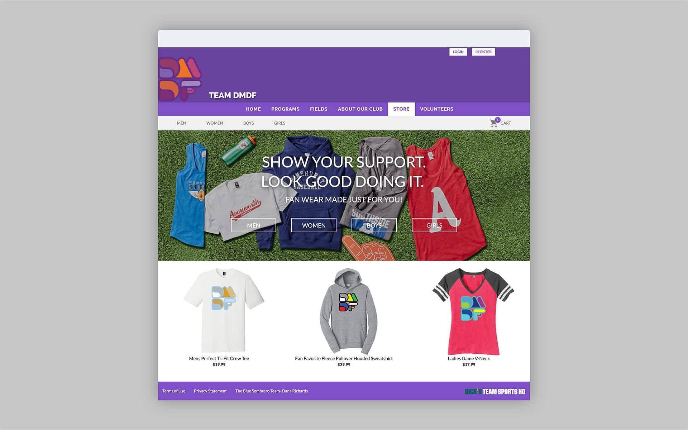
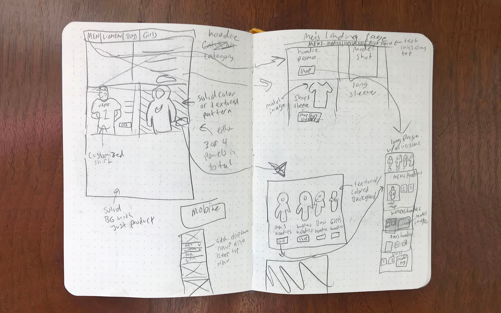
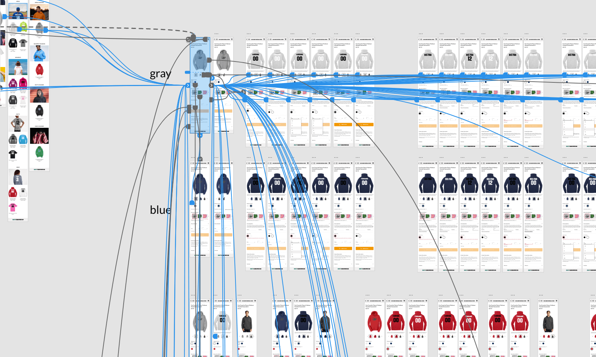
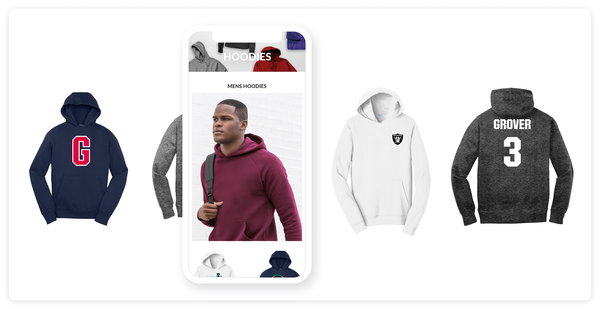
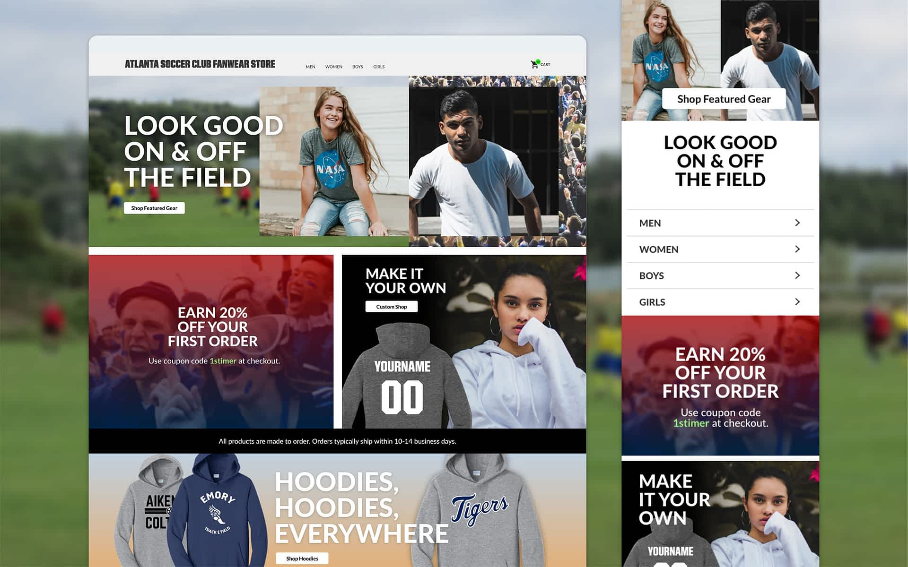
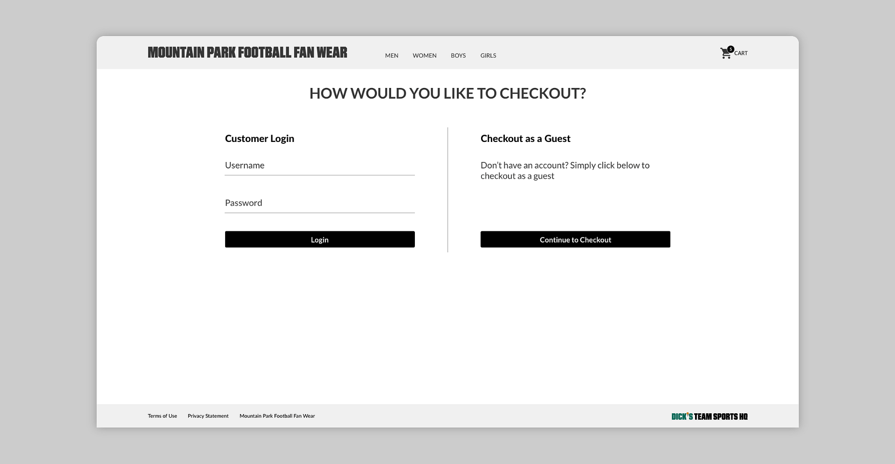
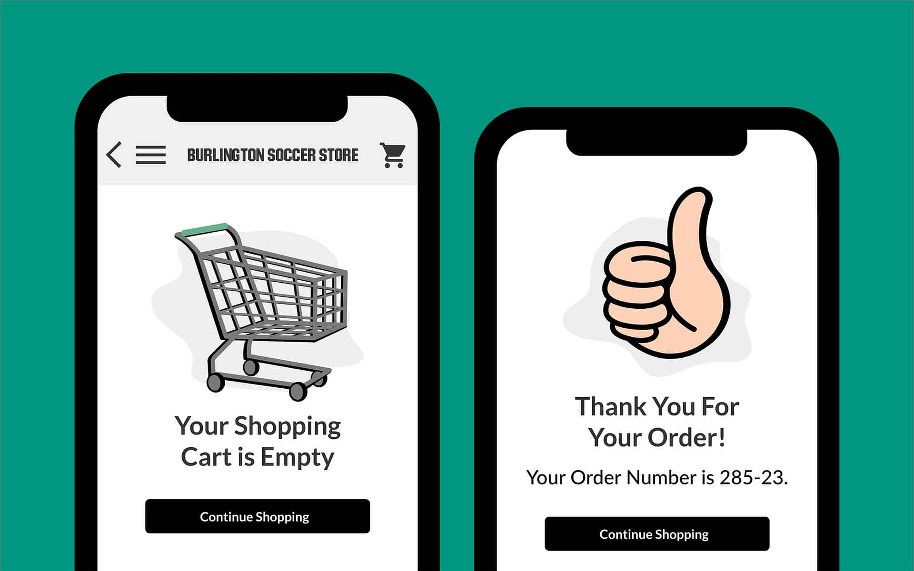
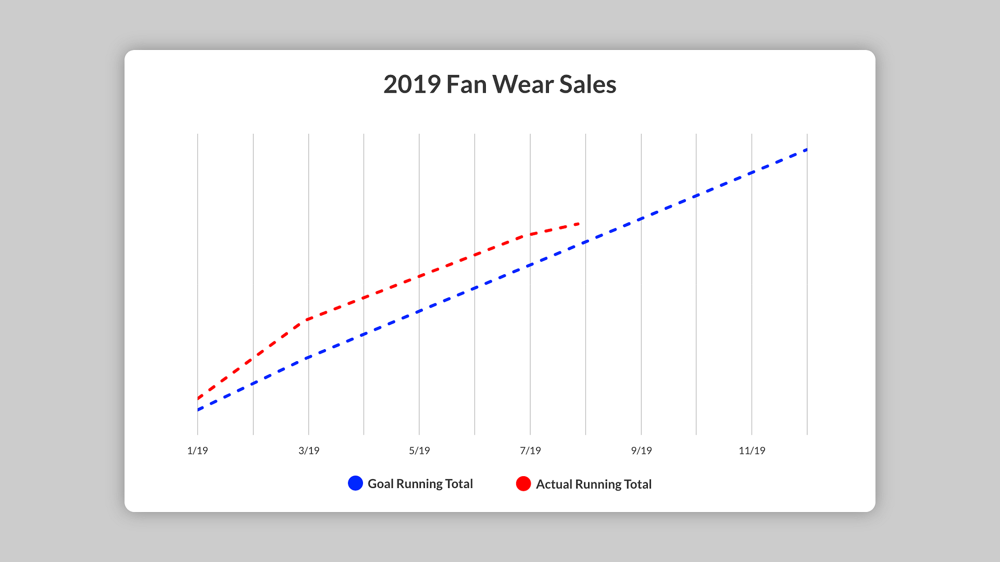

DICK'S TSHQ
Fan Wear Redesign

In early 2018 DICK'S TSHQ launched a standalone fan wear store — an expanded version of the store featured in registration. It allowed users to purchase made-to-order clothing like hoodies and t-shirts with their team logos and colors, offered as a free service with a portion of sales returning to the club.
For this project, I worked as the lead designer alongside the ecommerce dev team and product manager.
The Challenge
The concept was great, but the store was built on a tight deadline by a small team. There were quality control issues with the overall experience, and it wasn't marketed at all — many customers were unaware it existed. The store was bare bones and just didn't look or perform the way one would expect an ecommerce experience to in the present day. I was tasked with giving the fan wear store an update: easier to use, aligned with current ecommerce expectations, with the ultimate goal of selling more fan wear.

Legacy fan wear UI.
Research
The PM and I identified current issues with the product, user needs, and our business goals. A customer journey map was created to understand how customers were using the site. Since TSHQ had already launched a fan wear store, we had initial research on our customer target base and what clothing items they were most interested in. I also worked with the support team to understand current frustrations and pain points.
I conducted external research to better understand the competitive field — Nike, Adidas, Amazon — analyzing their approaches to similar problems and highlighting best practices.
Problem Areas and Assumptions
A big problem identified through user feedback was confusion with our personalization flow. Customers could personalize garments with a name and number, but the process was confusing — customers were mistakenly buying items that didn't reflect what they wanted. Our assumption: redesigning the personalization process would lead to more personalized items in cart and higher revenue.
Analytics and support feedback also showed high shopping cart abandonment. Assumptions: users not noticing the increased cost of personalization, and high shipping costs. We also identified that users had to be logged in to make a purchase — we needed to allow non-users like relatives or friends to also buy.

Early sketches and wireframes.
User flow.

Mobile prototype.
Design Solutions
Personalization
User testing revealed customers were filling out personalization fields but failing to click the checkmark to confirm — the system required this confirmation but it wasn't clear. I worked with dev to have the system accept field input in real time as it was typed. I also added a clear "Remove Personalization" button to reduce ambiguity, and made item price update in real time when personalization was added.
Personalization.
Landing Pages
The previous store suffered from having a very small selection of items — the overall feeling was underwhelming. I noticed that many retailers sell relatively small categories of clothing but give their websites the appearance of grandeur through landing pages that market their shiniest and newest items. Landing pages were created for personalization and seasonal items we could rotate, like hoodies or tank tops.

Landing pages for personalization.


Home screen.
Visual Feedback
Once a user adds an item to the cart, they receive direct visual feedback in an overlay showing the item and details, with two options — "View Cart" or "Checkout." This overlay acts as a clear CTA to funnel customers into checkout. If the customer isn't finished shopping, they can click off the overlay or it disappears after 2 seconds.
Shopping Cart and Checkout Abandonment
Our initial assumption about cart abandonment was that users weren't seeing shipping rates until after entering their address. The solution: provide an estimated shipping cost in the shopping cart upfront. We also introduced promotions including free shipping, testing variations from a catch-all "FREE SHIPPING" to conditional "buy X amount and receive free shipping."

Guest checkout.
Photography
The store originally only had individual product images from manufacturers — great for product detail screens but absent of a human element. We worked directly with DICK'S Sporting Goods corporate photo partners to diversify our image asset library with models of various ages wearing our apparel and laydown product images.
We also leveraged illustrations I created for registration to keep a consistent look across TSHQ products.

Illustrations found throughout TSHQ products.
Results
This project launched in early 2019. Initial testing has been promising and most assumptions are proving correct. The number of items sold with personalization increased by 10%, and shopping cart and checkout abandonment rates dropped by close to 20% since implementing the redesign.

As of mid August, with 4.5 months left in the calendar year, we are already at 32% YoY (vs 2018) growth in sales!